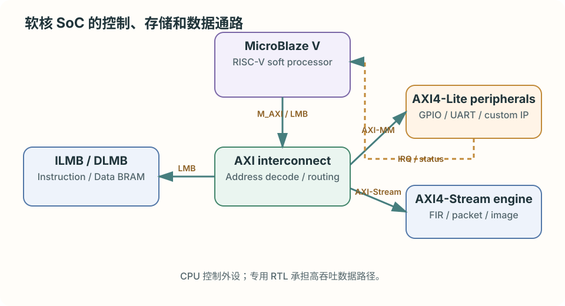
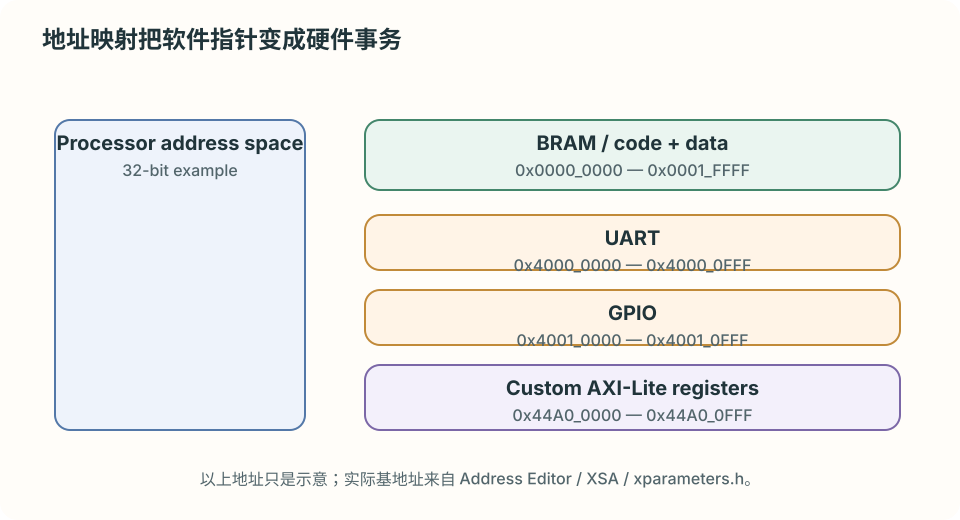
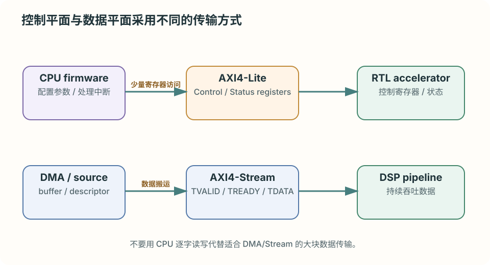

MicroBlaze V：把软核处理器接入 FPGA SoC
以当前 RISC-V MicroBlaze V 为主线，串起本地 BRAM、AXI 互连、寄存器 IP、地址映射、XSA 导出和 C 固件 MMIO。
01 / 为什么要在 FPGA 逻辑里实现一个处理器？
软核处理器并不是为了取代桌面 CPU。它把一个可配置处理器放进 FPGA 逻辑，使系统可以在同一器件中组合软件控制、定制外设和硬件加速器。软件适合复杂控制流程，RTL 适合高吞吐并行数据通路。
本章以 AMD MicroBlaze V 为主线。它是 FPGA 中实现的 RISC-V 软核处理器，与早期采用 MicroBlaze 指令集的经典 MicroBlaze 不是同一个 ISA。MicroBlaze V 可配置为 32-bit 或 64-bit，采用 Harvard 结构，并支持 LMB、AXI4/AXI4-Lite、AXI-Stream 等接口。MicroBlaze V 架构 与 接口说明。

Intel Altera 生态中的 Nios V 也是 FPGA 软核处理器路线，但其工程、软件和 Platform Designer 工作流与 AMD/Vitis 不同。本章重点实现一个 MicroBlaze V + AXI4-Lite 自定义外设的系统契约，不用未经核验的 LUT、DMIPS 或 Fmax 数字比较不同软核。
02 / 处理器看到的不是“模块”，而是一张地址地图

在内存映射 I/O（MMIO）中，CPU 发出一个地址读写事务，互连根据地址窗口把事务路由到 BRAM 控制器、UART、GPIO 或自定义 AXI4-Lite IP。软件并不需要知道物理互连如何连线，但必须使用硬件平台给出的准确基地址和寄存器偏移。
不要在固件中复制一个网上示例的 0x44A00000 就认为那是所有工程的 PWM 外设地址。Vivado Address Editor 可以自动分配地址，也可以手动设置偏移和范围；地址窗口必须不重叠，并且覆盖的范围要与 IP address block 一致。MicroBlaze V 地址映射流程。
处理器还需要指令存储器、数据存储器、启动向量、堆栈和链接脚本。仅仅把 CPU IP 放进 Block Design 并不意味着它已经有可执行程序的内存空间。
03 / MicroBlaze V Block Design：时钟、复位、存储器、互连与调试
一个最小系统通常包括：MicroBlaze V core；LMB BRAM 或其他受支持的指令/数据存储器；AXI Interconnect / SmartConnect；JTAG Debug Module；时钟生成和复位同步；AXI GPIO/UART；自定义 AXI4-Lite 外设。
连接时应逐项核对：处理器的 instruction/data master 接口分别连到何种存储器或互连；AXI 时钟和复位域是否匹配；各从设备的地址范围是否有冲突；中断源是否接到处理器支持的中断路径；外设 reset 是否在时钟稳定后释放。
在 Vivado IP Integrator 中，Block Automation 和 Connection Automation 可以帮助建立基本系统，但自动连线不等于设计审查。必须运行 Validate Design、检查 DRC、生成 output products，并创建顶层 HDL wrapper。AMD IP Integrator Designer Assistance。
MicroBlaze V 的 IP 配置可选择 RV32/RV64、乘除法扩展、FPU、缓存和接口能力；这些选择影响软件 ABI、资源、时序和所需外设连接。不要直接拿经典 MicroBlaze 的配置截图套用到 MicroBlaze V。MicroBlaze V 设计步骤。
04 / 从 XSA 到 C：软件如何访问自定义寄存器
完成硬件设计并导出硬件平台后，Vitis 可以读取处理器、IP 和地址映射信息。生成的 xparameters.h 包含当前硬件平台的地址宏；C 代码应使用这些宏，而不是自己猜测基地址。导出 XSA 与 Vitis 软件平台。
下面的示例与第 19 章寄存器映射一致：ID 位于 0x0C，CTRL 位于 0x00，STATUS 位于 0x04。自定义 IP 的实例名不同，生成的 base-address 宏也会不同，必须按实际 xparameters.h 调整。
#include "xparameters.h"
#include "xil_io.h"
#include "xil_printf.h"
#define REG_BASE XPAR_AXI4LITE_REGS_0_S00_AXI_BASEADDR
#define REG_CTRL 0x00U
#define REG_STATUS 0x04U
#define REG_ID 0x0CU
uint32_t id = Xil_In32(REG_BASE + REG_ID);
if (id != 0x46504741U) {
xil_printf("peripheral ID mismatch\\r\\n");
}
Xil_Out32(REG_BASE + REG_CTRL, 0x05U);
uint32_t status = Xil_In32(REG_BASE + REG_STATUS);Xil_In32 和 Xil_Out32 是 Vitis standalone 库提供的 32-bit 寄存器访问函数。它们是处理器侧 MMIO API，不会自动修复错误的地址映射、硬件 reset、缓存属性或中断配置。Xil_Out32 API 与 Vitis I/O Memory。
完整示例文件为 examples/softcore/microblaze_v_mmio_demo.c；系统依赖和搭建步骤见 examples/softcore/system-contract.md。
05 / CPU 控制平面与 RTL 数据平面如何分工？

典型分工是：CPU 负责启动任务、写入参数、配置地址、处理中断和错误；硬件加速器负责 FIR、FFT、图像变换、包解析等数据密集型工作。AXI4-Lite 适合控制寄存器访问，AXI4-Stream 适合数据流；DMA 用于把大块数据在内存和流式 IP 之间搬运。
若 CPU 每次通过 MMIO 读写一个样本来驱动高吞吐加速器，软件事务和总线开销很可能成为瓶颈。应根据数据量、延迟、缓冲区、背压和中断策略选择 AXI-Stream/DMA，并在系统层面明确谁拥有 buffer、何时完成以及错误如何上报。
验收时分别验证：RTL 外设的 AXI 协议；Address Editor 的映射；固件的 base-address 宏；链接脚本和程序入口；时钟/复位；硬件中断；真实板卡下载与运行。导出 XSA 后在 Vitis 中编译出 ELF，并不等于已经在目标板上执行成功。
为什么不能把 AXI4-Lite 当作高吞吐视频像素通道？
AXI4-Lite 是单次内存映射访问，适合控制与状态寄存器。视频像素是连续数据流，应考虑 AXI4-Stream、TVALID/TREADY、TLAST/TKEEP 等流式语义，以及 DMA 和缓冲区管理。
一手资料与版本范围
- AMD UG1629 2026.1 · MicroBlaze V Overview
- AMD UG1629 2026.1 · MicroBlaze V I/O Overview
- AMD UG1711 2026.1 · Embedded Design
- AMD UG1711 2026.1 · Designing with MicroBlaze V
- AMD UG1711 2026.1 · Memory Mapping
- AMD UG1711 2026.1 · Exporting Hardware to Vitis
- AMD UG1400 2026.1 · I/O Memory
- AMD UG643 2026.1 · Xil_Out32
- Altera · Nios V Software Developer Handbook